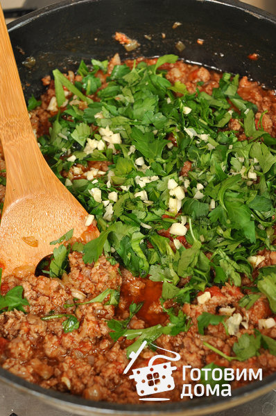
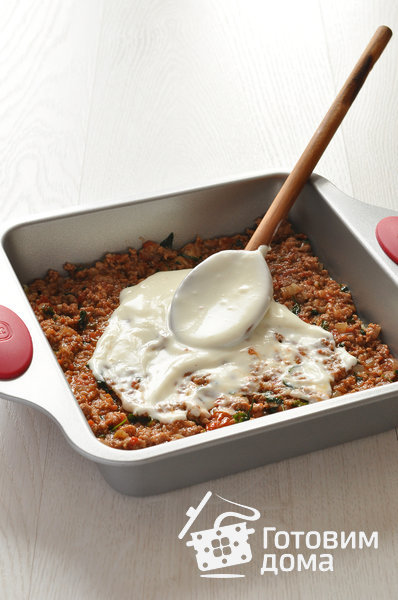
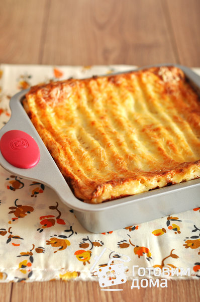

Общая информация
Лазанья (итал. Lasagna) — вид итальянской пасты, представляющее из себя пласты теста их твёрдых сортов пшеницы, которые прослаивают разнообразной начинкой и запекают. Лазанья — это традиционное блюдо итальянской кухни, и существует множество вариантов его приготовления. Сегодня мы будем готовить лазанью с мясным фаршем и соусом Бешамель, а с помощью пошагового рецепта с фото вы приготовите самую вкусную лазанью.
- Общее время приготовления 2 ч
- Активное время приготовления 1 ч 0 минут
- Сложность ЛЕГКИЙ
- Кол-во порций 6-8
Ингридиенты
- фарш (говядина + свинина) 1 кг
- листы лазаньи 180-200 г
- помидоры 500 г
- морковь 150 г
- лук 200 г
- сыр 300 г
- сыр пармезан 50 г
- чеснок 3-4 зубчика
- масло растительное
- соль
- Соус Бешамель
- молоко 1 литр
- масло сливочное 100 г
- мука 100 г
- мускатный орех 1 ч. ложка
Приготовление
Помидоры вымыть, со стороны плодоножки, сделать крестообразный надрез и опустить в кипяток на 2 минуты. Переложить в ледяную воду, снять кожицу и измельчить помидоры в блендере. Лук очистить и мелко нарезать. Чеснок очистить и порубить. Зелень вымыть и порубить. В сотейнике или глубокой сковороде разогреть сливочное масло вместе с растительным, выложить лук, посолить, поперчить и обжарить до мягкости.

Добавить рубленый чеснок (1 зубчик) и обжарить 1 минуту. Переложить лук с чесноком из сковороды в миску, стараясь, чтобы как можно больше масла осталось в сковороде. В сковороду выложить фарш.

И обжарить на среднем огне, до готовности, разминая деревянной лопаткой, чтобы разбить крупные комки.
К фаршу добавить обжаренный лук и помидоры.

И перемешать
Влить вино и тушить, помешивая, 3 минуты.Посолить, поперчить, убавить огонь до минимального, и тушить под крышкой 20-30 минут.Снять сотейник с соусом с огня, добавить рубленую зелень, оставшийся зубчик чеснока.
И перемешать.Соус накрыть крышкой и отставить в сторону.

Приготовить соус «Бешамель».

В большом количестве кипящей подсоленной воды отварить листы лазаньи около 2 минут (одновременно лучше отваривать не более 2 листов лазаньи).

Отваренные листы переложить в миску с ледяной водой. После того как листы остынут, обсушить их на полотенце от воды. На дно формы для запекания выложить немного соуса «Бешамель».
Сверху на соус уложить листы лазаньи.

Затем выложить часть соуса «Болоньезе».

И равномерно распределить соус в форме.
Сверху выложить часть соуса «Бешамель».
И также равномерно распределить соус в форме.
Уложить листы лазаньи.

Таким образом, чередовать слои, пока не будет заполнена форма. Последним слоем выложить листы лазаньи и покрыть соусом «Бешамель».

И посыпать поверхность тертым сыром.
Запекать лазанью 40-60 минут при температуре 180°C, до золотистой корочки.Готовую лазанью вынуть из духовки дать постоят 10-15 минут, разрезать на порции и подавать.
